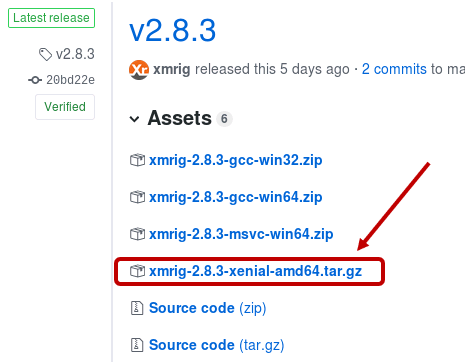
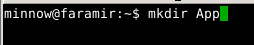
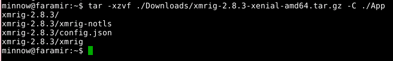
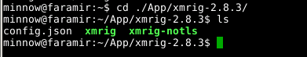
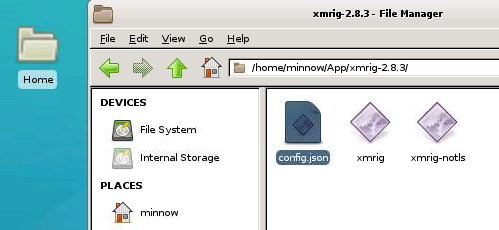
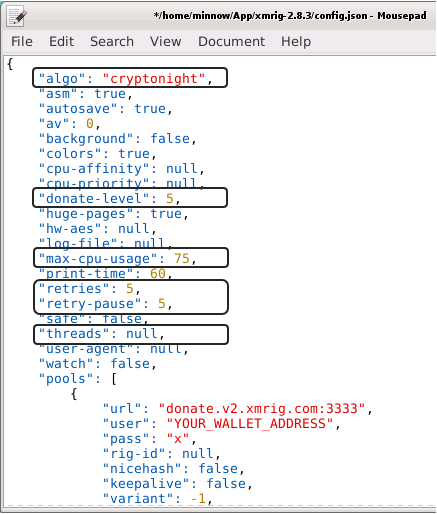
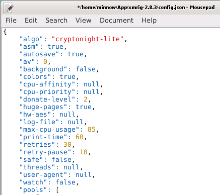
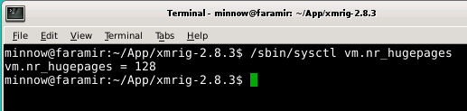
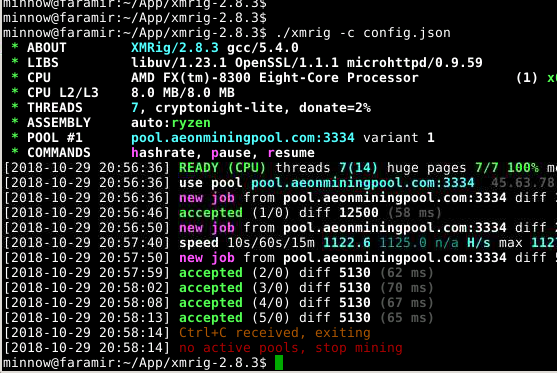

This How-To will show the steps to start mining AEON with your Linux computer, using Ubuntu as the example.
We will be using the XMRig mining application, and a mining pool for this walk-through. Joining a mining pool allows regular payouts with a single CPU, while solo-mining requires multiple machines and/or graphics cards to see regular payouts, and the setup is more complicated.
(NOTE: Another popular mining application is XMR-Stak. I have not found any clear documentation that shows either of these apps has a clear advantage over the other. The resulting hash rates are influenced by many factors, and each app has those who swear by it.)
https://github.com/xmrig/xmrig/releases
NOTE: Make sure you get the latest release; it should always be the first one listed.
Click on the link that ends with "amd64.tar.gz". This is the 64-bit version of the miner that will run on Ubuntu. Choose to Save the file. It will likely be saved in your Downloads directory, unless you specify another location. After this step, you can close your browser.
NOTE: To enter the commands in this tutorial, you will need to be logged into your Linux machine with a Terminal program, or from the Desktop you can open the Terminal Emulator that is provided with your version of Ubuntu.
NOTE: In the pictures below, each command begins after the command prompt. On my system, the command prompt always starts with “minnow@faramir:” followed by the current directory path, and ends with the dollar sign character ($). So the first command in the below picture is “mkdir App”. As you follow along, type the commands after your command prompt in your terminal window, and press the Enter key after typing each command.
First, we should set up a directory for our aeon apps. It will hold any versions of Aeon we install, and any mining software we may install later. I will create a new directory within my home directory, called “App”. If you choose a different name, be sure to use your directory name in place of “App” in any below commands.
Next I will unpack the file I downloaded, into the App directory, using the “tar” command. In the picture below, the command is on the first line. This assumes you downloaded AEON to your “Downloads” directory. If you downloaded it to a different location, you will need to replace “./Downloads/” with the correct directory of the file on your machine.
NOTE: The period-followed-by-slash (./) in the commands signifies "the current directory". I am running this command from my home directory, and the "Downloads" and "App" directories are both located there. That is why you see "./Downloads/..." and "./App".
From the 4 lines of output above, we can see that a new directory was created inside our App directory, called “xmrig-2.8.3”. All of the provided files now exist within that sub-directory.
To validate that everything looks right, you can use the “cd” command to change to the new directory, and the “ls” command to list all the files in that directory. This is shown in the below picture:
Notice the 3 files listed below the “ls” command. The config.json file allows us to configure the mining application to run as we desire and connect to the correct mining pool. The xmrig file is the binary application that we will run from the command line from within this directory.
Now, we need to configure XMRig properly, by modifying some of the values in the config.json file. To do this, you will need to open the file in your preferred text editor.
In the picture above, I have double-clicked on the Home folder on my desktop, and in the File Manager window I have navigated to the ./App/xmrig-2.8.3/ folder.
Let's set up the basic parameters to mine AEON coins. In the File Manager window, double-click on the config.json icon. On my system, this brings up the Mousepad text editor, as shown in the picture below.
I have circled (in black) the parameters that we will most likely edit. NOTE: These parameters may not appear in the same order, and the order in the file does not matter.
* "algo": This value MUST be changed to "cryptonight-lite" in order to work with AEON. * "donate-level": The % of mining time to donate to the XMRig developers. Default is 5%, and you cannot make it lower than 1%. * "max-cpu-usage": This sets the maximum % to utilize your CPU. The default is 75%, and if you use your computer for other tasks, you can lower this even more. I would not recommend setting to 100%. * "retries" / "retry-pause": The # of times xmrig will try to reconnect if it cannot get a connection to the pool, and the # of seconds to pause between each retry. If it fails to connect after all the retries, it will exit. If you have poor network connectivity, you may want to raise these values. * "threads": The # of CPU threads to use for mining. This should not exceed the # of cores in your CPU. A value of "null" will cause xmrig to choose the maximum # of threads it can efficiently make use of. If you are using your PC for other tasks, you can set this to use fewer threads.Below is an example of how these parameters may be set:

Next we need to set up the configuration to connect to a mining pool. You can find available pools listed on the AEON website, the "r/aeon" sub-reddit, or ask the friendly people on the AEON Discord community.
It is always a good thing to use a smaller pool, one that provides < 10% of the total AEON network hashrate. This keeps the network properly distributed. You will want to visit the pool's website, and look for instructions on how to set your parameters to connect to their pool. Each pool can be slightly different, and provide different options, fees, and minimum payouts. This guide will not recommend one over another.
In your config.json file, you will most likely set the "url" parameter to be the domain name and port number of the pool connection. An example would be "pool.somepool.com:1234". (The pool's website will let you know.) Most often, the "user" parameter will be set to your wallet address, where you want to receive your AEON coins.
The "pass" value may or may not be used, and most often I have set "keepalive" to "true" and "nicehash" to "false".
Make sure you save the changes to your config.json file!
On Linux systems it has been shown that activating "huge pages" memory can provide up to a 10% increase in hash rates when mining. To check whether your system is using huge pages, you can type the following command in a terminal window:
/sbin/sysctl vm.nr_hugepages
If huge pages is active, you should see a value like 128 as shown in the image below:
If you instead see a message that it cannot find the file or value, then you will need to enter the following commands to activate huge pages:
sudo /sbin/sysctl -w vm.nr_hugepages=128
sudo printf "\nvm.nr_hugepages=128\n" >> /etc/sysctl.conf
After the above commands, you should be able to run the first command again, and see the proper output that the value = 128, as in the above picture. Now you are ready to mine!
NOTE: You can safely mine without huge pages if you have trouble activating it.
If you have successfully made it this far, you are ready to begin mining! From within your xmrig subdirectory, launch your miner with the following command in your terminal window:
./xmrig -c config.json
You will first see summary information about your miner. In the above image, you can see the number of threads running (7), the amount of the donation (2%), and the pool you are connected to.
The first line of output after the summary, should begin with "READY". If you have huge pages correctly configured, you will see in the ready line that huge pages is running on 100% of the threads.
The lines which begin with "new job" tell you that you have received a new calculation job from the pool, with a specific "diff" value (the difficulty of the calculation). This difficulty value will adjust up and down automatically until it is optimized for your CPU.
The "speed" lines tell you what your hash rate is - the # of hash values that your miner is calculating per second. In the above picture, you can see that the CPU is calculating about 1122 hashes per second. (This is the same as 1.122 KH per second, in kilo-hashes.)
The "accepted" lines inform you that your miner calculated a correct hash value at a certain difficulty. This does not mean that your miner correctly solved a block! It just means that you are contributing to solving the problem.
If you see output like the above, congratulations! You are mining AEON!!
The rate at which you acquire AEON in a pool varies, based on several things. Very small pools may take days to discover a block, and if your computer(s) are contributing a significant amount of the pool's hashes, you may get a payout of 1 or 2 AEON when each block is discovered. Larger pools may discover several blocks each day, and your miner will get a small fraction of 1 AEON with each block discovered. If a pool has a minimum payout amount, it may take a while for your miner to gain enough AEON to get a payout to your wallet.
Many pools have the ability for you to track your earnings by entering your wallet address into a form on their website. This makes it easy to see your progress even if it is very small.
For a very rough estimate, I have recently seen the following earnings when the block reward is about 8 AEON per block, and total network hash rate is about 10.5 MH/s: 0.28 AEON per day, for 1000 H/s (1.0 KH/s). Note that the reward will slowly decrease over time, and the network hash rate has recently varied between 7 MH/s and 14 MH/s, so predictions are difficult to make.
The best advice is to pick a pool and mine for a week or 2. See where you end up. If you have a 2nd PC, you can set up a miner on that CPU as well, and point it to the same pool and wallet. This will increase your payouts.